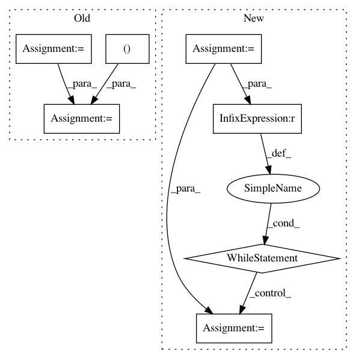

a529601042d6d0cdd5eadcb3ceea7f1838cde45d,dipy/align/metrics.py,CCMetric,compute_backward,#CCMetric#,276
Before Change
self.gradient_moving,
self.factors)
displacement=np.array(displacement)
displacement[..., 0] = ndimage.filters.gaussian_filter(displacement[..., 0],
self.sigma_diff)
displacement[..., 1] = ndimage.filters.gaussian_filter(displacement[..., 1],
self.sigma_diff)
displacement[..., 2] = ndimage.filters.gaussian_filter(displacement[..., 2],
self.sigma_diff)
max_norm = np.sqrt(np.sum(displacement**2, -1)).max()
displacement *= self.step_length/max_norm
After Change
self.gradient_moving,
self.factors)
displacement=np.array(displacement)
i=0
while i < self.dim:
displacement[..., i] = ndimage.filters.gaussian_filter(displacement[..., i],
self.sigma_diff)
i+=1
max_norm = np.sqrt(np.sum(displacement**2, -1)).max()
displacement *= self.step_length/max_norm
return displacement
In pattern: SUPERPATTERN
Frequency: 3
Non-data size: 7
Instances
Project Name: nipy/dipy
Commit Name: a529601042d6d0cdd5eadcb3ceea7f1838cde45d
Time: 2014-03-08
Author: jomaroceguedag@gmail.com
File Name: dipy/align/metrics.py
Class Name: CCMetric
Method Name: compute_backward
Project Name: aleju/imgaug
Commit Name: 2a1bd4c93a998d16516d82893401b346d66a95e9
Time: 2019-07-19
Author: kontakt@ajung.name
File Name: imgaug/dtypes.py
Class Name:
Method Name: get_minimal_dtype
Project Name: nipy/dipy
Commit Name: a529601042d6d0cdd5eadcb3ceea7f1838cde45d
Time: 2014-03-08
Author: jomaroceguedag@gmail.com
File Name: dipy/align/metrics.py
Class Name: CCMetric
Method Name: compute_forward